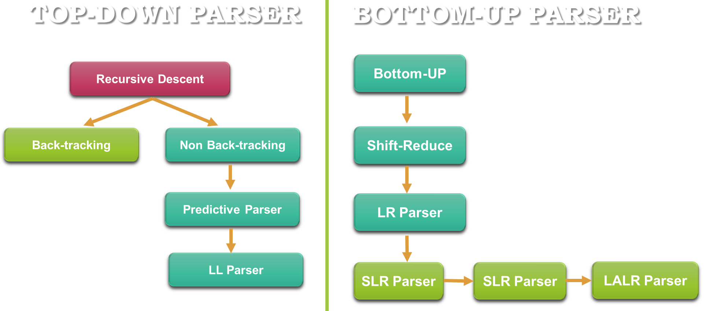
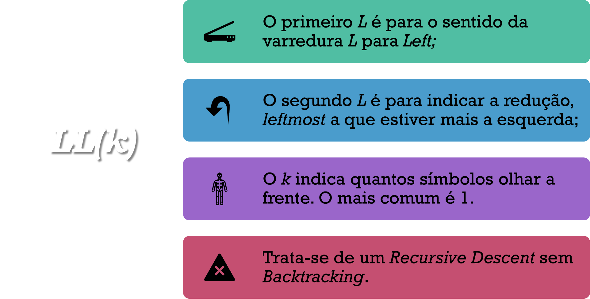
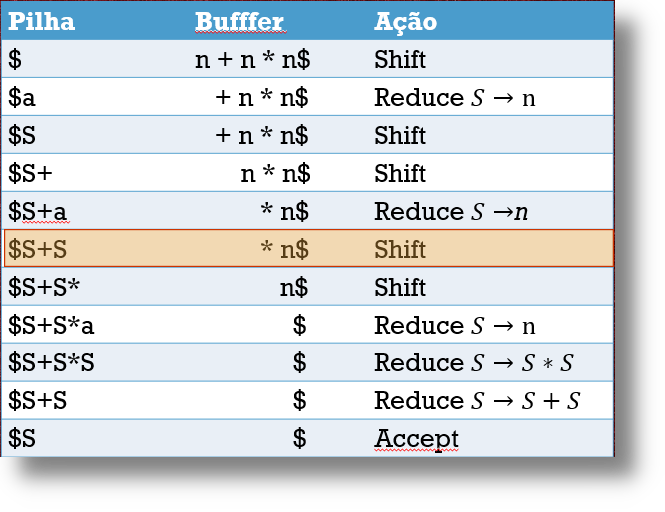
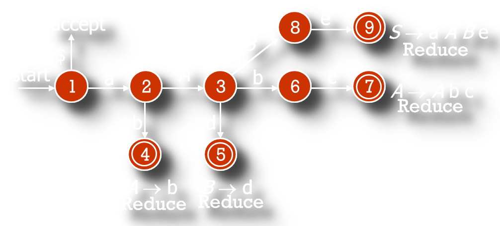

Frank Coelho de Alcantara -2020
Parser é o artefato de software responsável por validar, ou produzir, uma determinada string de uma linguagem $𝐿$ Segundo a gramática $𝐺$ sobre o alfabeto $\Sigma$.
Para fins didáticos, algoritmos de parser estão divididos em duas grande famílias top-down e bottom-up.
Percorremos da raíz até as folhas, no caso do Top-Down, ou das folhas até a raíz no caso do Bottom-up.

Símbolos à esquerda são os símbolos não terminais, representados por letras latinas maiúsculas $(𝑆, 𝐴, 𝐵, …)$.
Símbolos à direita podem ser terminais, ou não. Símbolos terminais são representados por letras latinas minúsculas ou outros símbolos $(a, b, c, ...)$.
Várias regras $(𝐴\rightarrow \beta_1, 𝐴\rightarrow \beta_2, …, 𝐴\rightarrow \beta_n)$, com um mesmo não terminal do lado esquerdo podem ser reunidas: $𝐴 \rightarrow \beta_1 | \beta_2 | … |\beta_n$.
Strings com terminais e não terminais, quando existirem, são representadas por letras gregas minúsculas $(\Gamma, \Delta, \Phi,...)$.
Strings só de não terminais são representadas por letras latinas mínúsculas $(S, A, B, C, ...)$.
Strings só de terminais são representadas por letras latinas mínúsculas $(w, x, y, z, ...)$.
Um símbolo qualquer, indefinido, que pode ser terminal ou não terminal, será representado por uma letra latina maiúscula $(𝑋, 𝑌, …)$.
A árvore gerada por derivação pode ser usada para caracterizar as gramáticas livres de contexto.
Consideramos equivalentes todas as derivações que correspondem a mesma árvore.
Derivação à esquerda (leftmost derivation): uma regra é sempre aplicada ao primeiro não terminal da cadeia, o que fica mais à esquerda.
Derivação à direita (rightmost derivation): uma regra é sempre aplicada ao último não terminal da cadeia, o que fica mais à direita.
O algoritmo de parser definirá a forma como faremos a derivação. Esta forma define quais tipo de derivação vamos utilizar para substituir símbolos terminais por não terminais, ou vice-versa.
Uma gramática é ambígua se, para uma string $w$ qualquer, existem duas ou mais árvores de derivação distintas, duas ou mais derivações a esquerda ou duas ou mais derivações a direita.
Podemos mostrar que uma gramática é ambígua mostrando que para uma determinada string $w$ existem árvores sintáticas distintas.
A ambiguidade e o comportamento indefinido são dois problemas sérios em computação.
Construiremos a árvore sintática a partir da Raiz (topo) e da esquerda para direita.
Nesta árvore nós são símbolos não terminais e folhas são símbolos terminais.
Começaremos pelo símbolo inicial, neste caso o S.Considere a gramática a seguir e encontre a árvore de derivações para $“a + a * a”$:
$𝑆 \rightarrow 𝑆+𝑇$ $𝑆 \Rightarrow 𝑆+𝑇;$
$𝑆→𝑇$$\Rightarrow 𝑇+𝑇;$
$𝑇→𝐹$$\Rightarrow 𝐹+𝑇;$
$𝐹→𝑎$$\Rightarrow 𝑎+𝑇;$
$𝑇→𝑇∗𝐹$$\Rightarrow 𝑎+𝑇∗𝐹;$
$𝑇→𝐹$$\Rightarrow 𝑎+𝐹∗𝐹;$
$𝐹→𝑎$$\Rightarrow 𝑎+𝑎∗𝐹;$
$𝐹→𝑎$$\Rightarrow 𝑎+𝑎∗𝑎;$
$𝑆 \rightarrow 𝑆+𝑇$ $𝑆 \Rightarrow 𝑆+𝑇;$
$𝑆→𝑇$$\Rightarrow 𝑇+𝑇;$
$𝑇→𝐹$$\Rightarrow 𝐹+𝑇;$
$𝐹→𝑎$$\Rightarrow 𝑎+𝑇;$
$𝑇→𝑇∗𝐹$$\Rightarrow 𝑎+𝑇∗𝐹;$
$𝑇→𝐹$$\Rightarrow 𝑎+𝐹∗𝐹;$
$𝐹→𝑎$$\Rightarrow 𝑎+𝑎∗𝐹;$
$𝐹→𝑎$$\Rightarrow 𝑎+𝑎∗𝑎;$
Leftmost
$𝑆 \Rightarrow 𝑆+𝑇;$
$\Rightarrow 𝑇+𝑇;$
$\Rightarrow 𝐹+𝑇;$
$\Rightarrow 𝑎+𝑇;$
$\Rightarrow 𝑎+𝑇∗𝐹;$
$\Rightarrow 𝑎+𝐹∗𝐹;$
$\Rightarrow 𝑎+𝑎∗𝐹;$
$\Rightarrow 𝑎+𝑎∗𝑎;$
Rightmost
$𝑆 \Rightarrow 𝑆+𝑇;$
$\Rightarrow 𝑆+𝑇∗𝐹;$
$\Rightarrow 𝑆+𝑇∗𝑎;$
$\Rightarrow 𝑆+𝐹∗𝑎;$
$\Rightarrow 𝑆+𝑎∗𝑎;$
$\Rightarrow 𝑇+𝑎∗𝑎;$
$\Rightarrow 𝐹+𝑎∗𝑎;$
$\Rightarrow 𝑎+𝑎∗𝑎;$
Considere o exemplo anterior e verifique se as duas derivações produzem a mesma árvore.
Tente encontrar outra derivação para criar uma árvore diferente.
Discuta seus resultados com seus colegas de classe. Este é um processo mecânico de observar a regra e fazer a substituição. Ainda assim, merece ser discutido e praticado. Vocês terão 5 minutos.
Considere uma string $w$ qualquer:
Considere a gramática definida a seguir e encontre a derivação que prove que “abbcde” pertence a linguagem definida por esta gramática.
| Strings | Produções | Escolha |
|---|---|---|
| $abbcde$ | $𝑨 \rightarrow 𝒃$ | |
| $𝑩 \rightarrow 𝒅$ | $𝑨 \rightarrow 𝒃$ | |
| $aAbcde$ | $𝑨 \rightarrow 𝑨𝒃𝒄$ | |
| $𝑨 \rightarrow 𝒃$ | ||
| $𝑩 \rightarrow 𝒅$ | $𝑨 \rightarrow 𝑨𝒃𝒄$ | |
| $aAde$ | $𝑩 \rightarrow 𝒅$ | $𝑩 \rightarrow 𝒅$ |
| $aABe$ | $𝑺 \rightarrow 𝒂𝑨𝑩𝒆$ | $𝑺 \rightarrow 𝒂𝑨𝑩𝒆$ |
| $S$ |
Os parsers desta categoria também são chamados de SR Parsers (Shift-Reduce). Onde:
Shift: leia o próximo símbolo;
Reduce: uma substring $w$ correspondente ao lado direito de uma regra será substituída.
Vamos colocar símbolos na pilha até que a pilha tenha tantos símbolos quanto necessário para reconhecer o lado direito de uma regra de produção. Assim que isso acontecer faremos a troca destes símbolos pelo não terminal correspondente.
A sequência de símbolos na pilha que está pronta para ser reduzida é chamada de handle.
O handle é o lado direito de uma regra de produção segundo determinado pela gramática.
Shift: o símbolo corrente na pilha e lê o próximo símbolo.
Reduce: o conteúdo da pilha usando uma regra de produção.
A redução do conteúdo da pilha pode ser chamado de Handle Pruning. Para isso usamos:
Considere a gramática definida pelo seguinte conjunto de regras de produção e encontre a derivação para “a + a * a”.
| Pilha | Buffer | Ação |
|---|---|---|
| $\$$ | $ a+a*a\$$ | Shift |
| $\$a$ | $+a*a\$$ | Reduce $S \rightarrow a$ |
| $\$S$ | $+a*a\$$ | Shift |
| $\$S+$ | $a*a\$$ | Shift |
| $\$S+a$ | $*a\$$ | Reduce $S \rightarrow a$ |
| $\$S+S$ | $*a\$$ | Shift |
| $\$S+S*$ | $a\$$ | Shift |
| $\$S+S*a$ | $\$$ | Reduce $S \rightarrow a$ |
| $\$S+S*S$ | $\$$ | Reduce $S \rightarrow S*S$ |
| $\$S+S$ | $\$$ | Reduce $S \rightarrow S+S$ |
| $\$S$ | $\$$ | Accept |
Refaça este exemplo cuidadosamente veja se é possível encontrar outra sequência de substituição.
Se encontrar outra sequência de substituição. As árvores sintáticas serão iguais?
Compare seus achados com os achados dos seus colegas de classe.
Vocês terão 10 minutos para isso.
O que acontece quando não existe uma regra adequada?
Se, a qualquer momento, não existir uma regra de produção que permita a derivação, o parser deve voltar e refazer a árvore; talvez uma das escolhas de regras possa ser alterada.
A essa operação damos o nome de Backtrack.
Existem dois algoritmos para varrer uma árvore sintáticas conhecidos por sua eficiência: deep-first e breadth-first.
No deep-first havendo duas opções, armazenamos uma e seguimos com a outra, se algo der errado voltamos neste ponto e seguimos a outra alternativa.
No breadth-first, armazenamos um conjunto de soluções parciais e examinamos estas soluções em busca de soluções melhores eventualmente o conjunto irá conter toda a árvore.
criamos um conjunto para cada opção e vamos eliminando opções ruins.
Classe de parsers que usa um ponteiro apontando para o próximo símbolo na string;
Usam uma classe de gramática especial chamada de LL(k);
O k representa o número de símbolos analisados em cada passo (previstos???).
Definimos gramáticas LL(1) de tal forma que:$$𝑮=\{𝑵,\Sigma, 𝑷, 𝑺\}$$
Onde: $$𝒘 \in \Sigma^∗, 𝑨\in 𝑵, \alpha, \beta 𝒆 \gamma \in (𝑵\cup \Sigma)^∗$$
Cujas derivações serão dadas por:$$𝑺 \rightarrow 𝒘𝑨 \gamma | 𝒘 \alpha 𝜸 | 𝒘𝒙 \in \Sigma^∗$$
$$ 𝑺 \rightarrow 𝒘𝑨 \gamma | 𝒘\beta \gamma | 𝒘𝒚 \in \Sigma^∗$$

O Parser precisa encontrar a Regra de Produção para um símbolo não terminal $N$ qualquer olhando apenas um símbolo terminal $t$ qualquer.
Para encontrar esta regra, podemos usar uma tabela com uma chave que indicará a regra de produção para uma função de derivação a ser definida por $D(N,t)$.
Se usarmos a tabela, o trabalho do parser fica reduzido a análise desta tabela. Isso irá diminuir a complexidade computacional envolvida.
Considere o alfabeto $\Sigma = \{n, +, *, (, )\}$, o seguinte conjunto de Regras de produção e a Tabela D a seguir:
| $n$ | $+$ | $*$ | $($ | $)$ | $\$$ | |
|---|---|---|---|---|---|---|
| $S$ | $1$ | $ $ | $ $ | $1$ | $ $ | $ $ |
| $R$ | $ $ | $3$ | $2$ | $ $ | $2$ | $2$ |
| $T$ | $4$ | $ $ | $ $ | $4$ | $ $ | $ $ |
| $G$ | $ $ | $5$ | $6$ | $ $ | $5$ | $5$ |
| $F$ | $7$ | $ $ | $ $ | $8$ | $ $ | $ $ |
Vamos usar a Tabela D para gerar a árvore sintática abstrata da string "n*n" sem as aspas.
| $n$ | $+$ | $*$ | $($ | $)$ | $\$$ | |
|---|---|---|---|---|---|---|
| $S$ | $1$ | $ $ | $ $ | $1$ | $ $ | $ $ |
| $R$ | $ $ | $3$ | $2$ | $ $ | $2$ | $2$ |
| $T$ | $4$ | $ $ | $ $ | $4$ | $ $ | $ $ |
| $G$ | $ $ | $5$ | $6$ | $ $ | $5$ | $5$ |
| $F$ | $7$ | $ $ | $ $ | $8$ | $ $ | $ $ |
Começamos com $S$, temos $D(S,n)=1$, expandimos $S$ usando $S \rightarrow TR$;
Temos $D(T,n)=4$, expandimos $T \rightarrow FG$;
Temos $D(F,n)=7$, expandimos $F \rightarrow n$;
Chegamos no $n$ mudamos o lookahead para $*$;
Temos $D(G,*)=6$, expandimos $G \rightarrow *T$;
Chegamos no $*$ mudamos o lookahead para $n$;
Temos $D(T,n)=4$, expandimos $T \rightarrow FG$;
Temos $D(F,n)=7$, expandimos $F \rightarrow n$;
Chegamos no $n$ mudamos o lookahead para $\$$;
Temos $D(G,\$)=5$, expandimos $G \rightarrow \varepsilon$;
Temos $D(R,\$)=2$, expandimos $R \rightarrow \varepsilon$;
Começamos com $S$, temos $D(S,n)=1$, expandimos $S$ usando $S \rightarrow TR$;
Temos $D(T,n)=4$, expandimos $T \rightarrow FG$;
Temos $D(F,n)=7$, expandimos $F \rightarrow n$;
Chegamos no $n$ mudamos o lookahead para $*$;
Temos $D(G,*)=6$, expandimos $G \rightarrow *T$;
Chegamos no $*$ mudamos o lookahead para $n$;
Temos $D(T,n)=4$, expandimos $T \rightarrow FG$;
Temos $D(F,n)=7$, expandimos $F \rightarrow n$;
Chegamos no $n$ mudamos o lookahead para $\$$;
Temos $D(G,\$)=5$, expandimos $G \rightarrow \varepsilon$;
Temos $D(R,\$)=2$, expandimos $R \rightarrow \varepsilon$;
| $n$ | $+$ | $*$ | $($ | $)$ | $\$$ | |
|---|---|---|---|---|---|---|
| $S$ | $1$ | $ $ | $ $ | $1$ | $ $ | $ $ |
| $R$ | $ $ | $3$ | $2$ | $ $ | $2$ | $2$ |
| $T$ | $4$ | $ $ | $ $ | $4$ | $ $ | $ $ |
| $G$ | $ $ | $5$ | $6$ | $ $ | $5$ | $5$ |
| $F$ | $7$ | $ $ | $ $ | $8$ | $ $ | $ $ |
| $Localizado$ | $Pilha$ | $Buffer$ | $Ação$ |
|---|---|---|---|
| $S\$$ | $n*n\$$ | Reduce $S \rightarrow TR$ | |
| $TR\$$ | $n*n\$$ | Reduce $T \rightarrow FG$ | |
| $FGR\$$ | $n*n\$$ | Reduce $F \rightarrow n $ | |
| $nGR\$$ | $n*n\$$ | Encontrei $n$ | |
| $n$ | $GR\$$ | $*n\$$ | Reduce $G \rightarrow *T$ |
| $n$ | $*TR\$$ | $*n\$$ | Encontrei $*$ |
| $n*$ | $TR\$$ | $n\$$ | Reduce $T \rightarrow FG$ |
| $n*$ | $FGR\$$ | $n\$$ | Reduce $F \rightarrow n$ |
| $n*$ | $nGR\$$ | $n\$$ | Encontrei $n$ |
| $n*n$ | $GR\$$ | $\$$ | Reduce $G \rightarrow \varepsilon $ |
| $n*n$ | $R\$$ | $\$$ | Reduce $R \rightarrow \varepsilon $ |
| $n*n$ | $\$$ | $\$$ | Fim |
Considere o alfabeto $\Sigma = \{n, +, *, (, )\}$, o seguinte conjunto de Regras de produção e a Tabela D a seguir:
| $n$ | $+$ | $*$ | $($ | $)$ | $\$$ | |
|---|---|---|---|---|---|---|
| $S$ | $1$ | $ $ | $ $ | $1$ | $ $ | $ $ |
| $R$ | $ $ | $3$ | $2$ | $ $ | $2$ | $2$ |
| $T$ | $4$ | $ $ | $ $ | $4$ | $ $ | $ $ |
| $G$ | $ $ | $5$ | $6$ | $ $ | $5$ | $5$ |
| $F$ | $7$ | $ $ | $ $ | $8$ | $ $ | $ $ |
Vamos usar a Tabela D para gerar a árvore sintática abstrata da string "n+n*n" sem as aspas.
Considere e gramática a seguir para a string "n+n*n" sem as aspas.
Praticamente todas as linguagens de programação podem ser especificadas em uma gramática $LR(1)$;
Os algoritmos $LALR(1)$ e $SLR$ são variações do $LR(k)$;
$LALR(1)$ todas as linguagens "reais" e com aplicação prática. Usam menos memória no processo de interpretação;
Todas as variações ($SLR$, $LALR$, $LR$) usam o mesmo algoritmo mas com tabelas de formato diferente.
O formato da tabela define a dificuldade na criação do parser.
Podem ser construídos para qualquer linguagem de programação sobre uma gramática livre de contexto. Podemos criar gramáticas LR que não são livres de contexto, mas estas tem pouca ou nenhuma utilidade em Linguagens de Programação.
O algoritmo é um método de parsing sem backtracking, baseado em Shift-Reduce que pode ser implementado de forma mais eficiente, mantendo complexidade baixa.
Pode detectar erros de sintaxe assim que seja possível identificar estes erros fazendo uma varredura da esquerda para a direita.
A classe de gramáticas $LR$ é um subconjunto da classe $LL$.
Como não temos nenhuma função para adivinhar o futuro, podemos usar o backtracking. A cada opção, mantemos uma árvore na memória, tentamos uma regra de produção. Se não der certo, voltamos até o ponto da opção e tentamos outra regra. Nem pensar!
Opcionalmente, podemos definir um prefixo viável, um prefixo de um handle que pode aparecer na pilha.
A ideia é construir uma $MEF$ para reconhecer os prefixos viáveis e, um ou dois tokens, do resto da string. Realizando a redução sempre que reconhecemos um token
Considere o conjunto de regras de produção a seguir para a string: “abbcde” sem as aspas.
| Pilha | Buffer | Operação |
|---|---|---|
| $\$$ | $abbcde\$$ | Shift |
| $a$ | $bbcde\$$ | Shift |
| $ab$ | $bcde\$$ | Reduce |
| $aA$ | $bcde\$$ | Shift |
| $aAb$ | $cde\$$ | Shift |
| $aAbc$ | $de\$$ | Reduce |
| $aA$ | $de\$$ | shift |
| $aAd$ | $e\$$ | Reduce |
| $aAB$ | $e\$$ | Shift |
| $aABe$ | $\$$ | Reduce |
| $S$ | $\$$ | Shift |
| $\$$ | $\$$ | Accept |
A solução com a MEF inclui muitas repetições, voltamos ao estado inicial a cada nova avaliação da pilha;
Só alteramos a parte do string que corresponde ao Handle;
Nós queremos que complexidade seja $O(n)$;
Cada gramática irá requerer uma MEF diferente.
Look-Ahead LR Parser>
Inventado por Frank DeRenner em 1969;
A divisão em itens do LR pode implicar em um grande número de repetições;
LALR, tenta reduzir o número de estados agrupando itens iguais.
Basicamente é um SLR, com menos estados e com toda a segurança do LR.
| Localizado | Pilha | Buffer | Ação |
|---|---|---|---|
| S $ | n + n * n | ||
| T R $ | n + n * n $ | S → T R | |
| F G R $ | n + n * n $ | T → F G | |
| n G R $ | n + n * n $ | F → n | |
| n | G R $ | + n * n $ | match n |
| n | R $ | + n * n $ | G → ε |
| n | + S $ | + n * n $ | R → + S |
| n + | S $ | n * n $ | match + |
| n + | T R $ | n * n $ | S → T R |
| n + | F G R $ | n * n $ | T → F G |
| n + | n G R $ | n * n $ | F → n |
| n + n | G R $ | * n $ | match n |
| n + n | *T R $ | * n $ | G → * T |
| n + n * | T R $ | n $ | match * |
| n + n * | F G R $ | n $ | T → F G |
| n + n * | n G R $ | n $ | F → n |
| n + n * n | G R $ | $ | match n |
| n + n * n | R $ | $ | G → ε |
| n + n * n | $ | $ | R → ε |
AHO, A. V. et al.
Compiladores: princípios, técnicas e ferramentas.
2º. ed. Boston, MA, USA: Pearson Education Inc. , 2007.
CASS, S. The 2016 Top Programming Languages. IEEE
Spectrum, 2016. Disponível em:
Você pode baixar o material de apoio clicando aqui
AHO, A. V. et al.
Compiladores: princípios, técnicas e ferramentas.
2º. ed. Boston, MA, USA: Pearson Education Inc. , 2007.
CASS, S. The 2016 Top Programming Languages. IEEE
Spectrum, 2016. Disponível em: